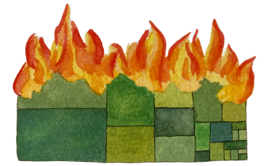
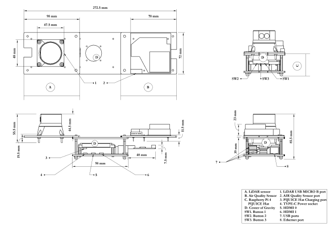

alt.
VIS
A half-day workshop at IEEE VIS 2023
Not all work that moves the field forward fits into the model of a standard conference paper or conference talk. The memorability or intellectual impact of work is often inextricably linked to this non-conventional form, whether it is a reflection, provocation, critique, satire, artistic statement, or manifesto. Successful venues like ACM CHI’s alt.chi (“a forum for controversial, risk-taking, and boundary pushing research at CHI”) and various “unconferences” have emerged in the past years as a way of providing an outlet for this sort of unconventional work.
Visualization, and IEEE VIS specifically, which incorporates perspectives in the intersection between art and design, statistics and psychology, we believe is uniquely placed to both generate and value the non-traditional. What’s more, we observed a long-running desire for an outlet for non-traditional work among both long-time attendees as well as those researchers or practitioners who do not currently feel welcome or appreciated in the IEEE VIS environment.
Therefore, based on the (often unexpected) utility of unconventional work, the long standing and successful models of “alternative” conferences, and an expressed interest in bringing these models to the IEEE VIS community, we founded an “alt.VIS” workshop in 2021 as a venue for work that is otherwise difficult to place in the main conference for reasons of form, format, or topic.
The remit of this workshop, mirroring alt.CHI, is relatively broad both in terms of scope of topics and presentation types: our selection criteria are more focused on impact. What sort of work might cause the field to rethink its priorities or ways of operating? What work might highlight under-explored or neglected areas of visualization study or application? What, as per Kant, would “interrupt [our] dogmatic slumber” and stir us to action?
Schedule
| Time | Content | Presenter |
|---|---|---|
| 14:00 - 14:10 | Intro | derya Akbaba |
| 14:10 - 15:17 | First Paper Session: In Here | Sara di Bartolomeo |
| 14:10 - 14:20 | Only YOU Can Make IEEE VIS Environmentally Sustainable | Elsie Lee-Robbins |
| 14:20 - 14:34 | DevOps for DataVis: A Survey and Provocation for Teaching Deployment of Data Visualizations | Jane Adams |
| 14:34 - 14:48 | Data embroidery with black-and-white textures | Tingying He |
| 14:48 - 15:02 | Humanity Influenced Visualization Design for Aerial Sensor-based Visualization of Environmental Factors | Elina Esenbaeva |
| 15:02 - 15:17 | VisFutures | Charles Perin |
| 15:15 - 15:45 | Coffee Break | |
| 15:45 - 17:00 | Second Paper Session: Out There | Jane Adams |
| 15:45 - 15:59 | Visualizing the Weird and the Eerie | Matthew Brehmer |
| 15:59 - 16:13 |
n Walks in the Fictional Woods | Sara di Bartolomeo |
| 16:13 - 16:27 | LSDvis: Hallucinatory data visualisations in real world environments |
Benjamin Lee |
| 16:27 - 16:41 | On nonstandard visualization | Alex Ravsky |
| 16:41 - 17:00 | Closing | Derya Akbaba, Jane Adams and Sara di Bartolomeo |
Accepted Papers
DevOps for DataVis: A Survey and Provocation for Teaching Deployment of Data VisualizationsMost Frustration-MotivatedJane AdamsWe present a provocation towards teaching development operations (“DevOps") and other infrastructure concepts in the course of collegiate data visualization instruction. We survey 65 syllabi from semester-long, college-level data visualization courses, with an eye toward languages and platforms used, as well as mentions of deployment related terms. Results convey significant variability in language and tooling used in curricula. We identify a distinct lack of discussions around ‘DevOps for DataVis’ scaffolding concepts such as version control, package management, server infrastructure, high-performance computing, and machine learning data pipelines. We acknowledge the challenges of adding supplemental information to already dense curricula, and the expectation that prior or concurrent classes should provide this computer science background. We propose a group community effort to create one free ‘course’ or ‘wiki’ as a living reference on the ways these broader DevOps concepts relate directly to data visualization specifically. A free copy of this paper and all supplemental materials are available at https://osf.io/bxaqz/ PDFOSF |
|
Data Embroidery with Black-and-White TexturesMost Likely to be on Etsy TomorrowTingying He, Petra Isenberg, Tobias IsenbergWe investigated data embroidery with black-and-white textures, identifying challenges in the use of textures for machine embroidery based on our own experience. Data embroidery, as a method of physically representing data, offers a unique way to integrate personal data into one's everyday fabric-based objects. Owing to their monochromatic characteristics, black-and-white textures promise to be easy to employ in machine embroidery. We experimented with different textured visualizations designed by experts and, in this paper, we detail our workflow and evaluate the performance and suitability of different textures. We then conducted a survey on vegetable preferences within a family and created a canvas bag as a case study, featuring the embroidered family data to show how embroidered data can be used in practice. PDF |
|
LSDvis: Hallucinatory Data Visualisations in Real World EnvironmentsAlbert Hofmann's Second FavoriteAri Kouts, Lonni Besançon, Michael Sedlmair, Dr Benjamin LeeWe propose the concept of "LSDvis": the (highly exaggerated) visual blending of situated visualisations and the real-world environment to produce data representations that resemble hallucinations. Such hallucinatory visualisations incorporate elements of the physical environment, twisting and morphing their appearance such that they become part of the visualisation itself. We demonstrate LSDvis in a "proof of proof of concept", where we use Stable Diffusion to modify images of real environments with abstract data visualisations as input. We conclude by discussing considerations of LSDvis. We hope that our work promotes visualisation designs which deprioritise saliency in favour of quirkiness and ambience. PDF |
|
|  | Only YOU Can Make IEEE VIS Environmentally SustainableSmokey's FavoriteElsie Lee-Robbins, Andrew M McNuttThe IEEE VIS Conference (or VIS) hosts more than 1000 people annually. It brings together visualization researchers and practitioners from across the world to share new research and knowledge. Behind the scenes, a team of volunteers puts together the entire conference and makes sure it runs smoothly. Organizing involves logistics of the conference, ensuring that the attendees have an enjoyable time, allocating rooms to multiple concurrent tracks, and keeping the conference within budget. In recent years, the COVID-19 pandemic has abruptly disrupted plans, forcing organizers to switch to virtual, hybrid, and satellite formats. These alternatives offer many benefits: fewer costs (e.g., travel, venue, institutional), greater accessibility (who can physically travel, who can get visas, who can get child care), and a lower carbon footprint (as people do not need to fly to attend). As many conferences begin to revert to the pre-pandemic status quo of primarily in-person conferences, we suggest that it is an opportune moment to reflect on the benefits and drawbacks of lower-carbon conference formats. To learn more about the logistics of conference organizing, we talked to 6 senior executive-level VIS organizers. We review some of the many considerations that go into planning, particularly with regard to how they influence decisions about alternative formats. We aim to start a discussion about the sustainability of VIS -- including sustainability for finance, volunteers, and, central to this work, the environment -- for the next three years and the next three hundred years. PDFArXiv |
Visualizing the Weird and the EerieMost (k-)PunkMatthew BrehmerIn this brief essay, I reflect on how Mark Fisher's definitions of the weird and the eerie could be applied in communicative data visualization. I ask how visualization designers might elicit these two impressions when a viewer is engaging with multimodal representations of data. I argue that there are situations in which viewers should feel uncertain or suspicious of unseen forces that account for the presence or absence of audiovisual patterns. Finally, I conclude that the ability to appreciate the weird and the eerie in data is particularly important at this moment in history, one marked by significant ecological and economic disruption. PDF |
|
|  | Humanity Influenced Visualization Design for Aerial Sensor-based Visualization of Environmental FactorMost InterdisciplinaryDr. and Prof. Brian J. d'Auriol, Elina Esenbaeva, Dana Nursultanova, Sabina Ualibekova, Suthipong SthiannopkaoThe motivating perspective of this work is that visualization is a human endeavor as natural as human life is itself. This has profound influence on the way visualization is approached as the focus shifts away from any data-centric, visualization technique- or system-based foundations to one of human-centric visual perception, information perception, information acquisition and learning. This paper reports on part of a design of a visualization approach and system for deployments in wide-scope application areas of interest and which is guided by the Engineering Insightful Serviceable Visualization (EISV) model and is thus in the context of this human-centric perspective. The application areas are primarily loosely constrained environments, that are, environments for which available techniques such as computational modeling or fixed, location-based sensors are ill-suited. These environments have terrain, build or other similar features. An aerial drone-based sensor platform is proposed to sample environmental data in these environments. One of the included sensors on this platform is a LiDAR, a distance ranging sensor. The visual output of the LiDAR is primarily studied in this paper using the notions of iconicity and indexicality in the Peircean sense and guided by the EISV model. Several work-in-progress experiments that illustrate how the proposed system may respond are described. PDF |
On Nonstandard VisualizationLeast EuclidianTaras Banakh, Alex RavskyWe discuss the nonstandard (non-Euclidean, four-dimensional, of variable dimension, and with two-edged space placement) visualizations, their neurophysiological and philosophical possibilities, and ways to realize them. PDF |
|
n Walks in the Fictional WoodsMost FlânerificVictor Schetinger, Sara Di Bartolomeo, Dr. Edirlei Soares de Lima, Christofer Meinecke, Rudolf RosaThis paper presents a novel exploration of the interaction between generative AI models, visualization, and narrative generation processes, using OpenAI's GPT as a case study. We look at the question "Where Does Generativeness Comes From?", which has a simple answer at the intersection of many domains. Drawing on Umberto Eco's "Six Walks in the Fictional Woods, we engender a speculative, transdisciplinary scientific narrative using ChatGPT in different roles: as an information repository, a ghost writer, a scientific coach, among others. The paper is written as a piling of plateaus where the titling of each (sub-)section, the "teaser" images, the headers, and a biblock of text are strata forming a narrative about narratives. To enrich our exposition, we present a visualization prototype to analyze storyboarded narratives, and extensive conversations with ChatGPT. Each link to a ChatGPT conversation is an experiment on writing where we try to use different plugins and techniques to investigate the topics that, ultimately form the content of this portable document file. Our visualization uses a dataset of stories with scene descriptions, textual descriptions of scenes (both generated by ChatGPT), and images (generated by Stable Diffusion using scene descriptions as prompts). We employ a simple graph-node diagram to try to make a "forest of narratives" visible, an example of a vis4gen application that can be used to analyze the output of Large Languange + Image Models. PDFArXiv |
|
VisFuturesMost PlayableMackenzie Dalton, Charles Perin, Lora Oehlberg, Petra Isenberg, Sheelagh Carpendale, Wesley WillettWelcome to Vis Futures! ... where YOU have a say in how people use data in the Future! Vis Futures is a card-based sketching game where players think critically (and playfully) about the future of data and visualization. Players deal a set of cards that hint at a possible future, and a possible dataset in that future. Players then use those prompts to imagine and sketch new visualization designs and imagine ways that future people from a particular audience might encounter, interact with, or utilize data (quirks and all). At the end of each round, players share their visualizations, discuss, and vote on which scenarios and visualizations are the most creative! Our goal is to include more people (including visualization students, researchers, and practitioners, as well as clients and collaborators) in discussions of critical data issues that have implications for the future of data, visualization, and technology. This game encourages players to engage in future-forward design thinking, examining the increasingly complex implications of our relationships with data and technology, and considering how, where, and why visual representations of data might play a role. It can be pretty fun too! This submission consists of the instruction booklet that accompanies the game. The provided link contains as supplemental material the cards for the game as well as the optional creator pack. These will later be uploaded and available at the game's website provided in the instructions. PDF |
Call for Submissions [CLOSED]
Note: deadline extended!!
We invite the submission of original bold, provocative, unusual, unconventional, thought-provoking works related to visualization in the broad sense. The deadline for submissions isExamples of submissions we encourage include (but are not limited to):
- Provocations, manifestos, or other critiques of visualization research and practice
- Creative and thought-provoking presentations of data (especially unconventional data), either as traditional visualizations or as multimedia presentations or artworks
- Novel and unconventional visualization techniques or design processes
- Hands-on activities and artworks of all mediums.
- (Kind and civil) critiques to other works.
Submissions will be evaluated on clarity, novelty, and their ability to promote productive thought and discussion for the alt.VIS audience. The purpose of this venue is to provide a place for works that fall outside of the purview of the main VIS paper program, and so submissions that would be more at home in the main track are unlikely to be accepted. Please consider taking a look at the submissions from last year’s alt.VIS 2022 for inspiration!
Accepted submissions will be made publicly available on the workshop’s webpage. Authors are also welcome and encouraged to archive on their repository of choice, e.g. OSF, ArXiv. Submissions will not be archived within the main IEEE VIS conference archive.
If you are unsure of how to submit your work, or if you want to discuss your submission with us, do not hesitate to contact us at alt.vis.workshop@gmail.com
* Authors serving in this workshop's organizing roles should include a COI statement in their PDF.
NOTE FOR EU SUBMITTERS: The alt.VIS workshop is Plan S compliant. 
Previous Editions (and proceedings):
Organizers
Lonni Besançon
Monash University
@lonnibesancon
lonnibesancon.me

Derya Akbaba
Linköping University
@gotdairyya
gotdairyya.github.io

Sara Di Bartolomeo
Northeastern University
@sara_picorana
picorana.github.io

Victor Schetinger
TU Wien
@VSchetinger
tuwien.ac.at/victor-schetinger
Steering Committee

Jane Adams
Northeastern University
@JaneLydiaAdams
universalities.com

Charles Perin
University of Victoria
@charles_perin
charlesperin.net

Michael Correll
@Birdbassador
correll.io
Questions? Contact us at alt.vis.workshop@gmail.com.